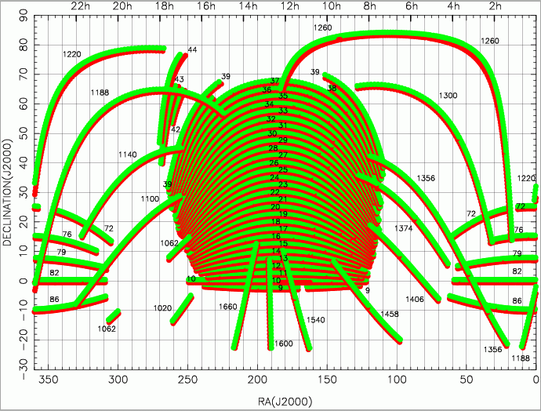
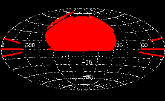
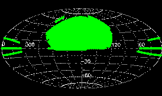
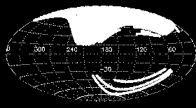
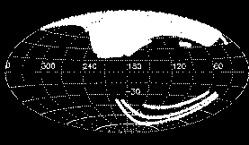
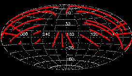
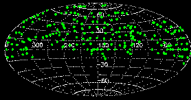
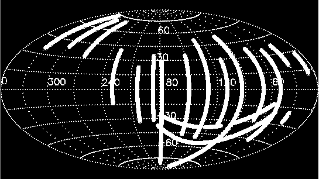
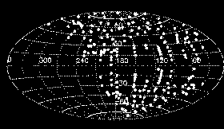

{kind=link}
{kind=link}
{kind=link}
{kind=link}
{kind=link}
{kind=link}
{kind=link}
{kind=link}
{kind=link}

The DR7 contains that part of the SDSS imaging and spectroscopy taken through July 14, 2008. Here we give coverage plots and the detailed coverage tables from which they were constructed, though excluding the supplemental imaging scans released through DRsup. Further below, we outline the future sky coverage of SDSS. The survey terms are explained in the sections on imaging coverage and spectroscopic coverage below.
For data interfaces, see the data access page.
Several stripes, when examined in detail, have anomalies (or errors) in the definition of the PRIMARY (mode = 1) footprint. Usually objects which should be in the primary footprint are missing. The links here provide a guide to the anomalies on a stripe-by-stripe basis, and in most cases, show sample SQL query clauses in which may be executed on the RunsDB database in order to recover objects uniquely within the full DR7 footprint.
Known anomalies in stripe: 26 1100 1100-79 1100-82 1140-72 1188-72 1220-72 1260-72 1260-76 1300-76 1356-72 1356-86
The quoted astrometric errors for SDSS are about 100 mas per coordinate or better, on average, around the sky. To check this, we have compared the positions of objects between the SDSS catalog and the 2MASS catalog, adn between the SDSS and the USNO-NOMAD catalogs, and we find a few positions within the SDSS footprint, especially some scans at high declination, where the errors are larger than the nominal values. In the following link we provide are some information about these astrometry anomalies, and how to find them.
| Full Footprint with Stripe Labels | ||
| Equatorial |  | |
| Imaging (ps) | ||
| Legacy Footprint | ||
| Equatorial |  |  |
| Imaging (ps) | Spectroscopy (ps) | |
| Galactic |  |  |
| Imaging (ps) | Spectroscopy (ps) | |
| SEGUE Footprint | ||
| Equatorial |  |  |
| Imaging (ps) | Spectroscopy (ps) | |
| Galactic |  |  |
| Imaging (ps) | Spectroscopy (ps) | |
For reference, the coverage tables describe the sky coverage in terms of survey coordinates. To translate the sky coverage into celestial coordinates, please refer to the coordinates section of the EDR paper and the description below.
Note: The coverage tables, and a number of other files we distribute, are given as ASCII parameter (.par) files.
| SDSS stripes | atStripeDef.par (survey coordinates) Including SEGUE stripe defs |
|---|
| All imaging runs | DR7,Stripe82,Runs CAS + DAS Runs Table of all the imaging |
|---|---|
| DR7 CAS Runs | allrunsdr7db.par Table of all runs in the DR7 CAS (Legacy and SEGUE) |
| DAS only runs | DAS only RUNS Table of runs only available in the DAS (not in the CAS) |
| Stripe 82 Runs | allRunsStripe82DB.par Table of Stripe 82 CAS DB runs, including coadd; see SN DR7 |
| RunsDB Table | allRunsRunsDB.par Table of Runs in the RunsDB CAS |
| Runs in CAS only | CASonly.par Table of run/reruns which are in one of the 3 CAS DBs only (i.e. no in the DAS) |
| Special Scans | Special/Supplemental Table of Special/Supplemental Runs in the CAS and DAS |
| DR7 DAS | All DAS Runs Link to all runs in the DR7 DAS | ||||||||
|---|---|---|---|---|---|---|---|---|---|
| DR7 CAS | AllCASRuns.dr7.par All scanline segments in the DR7 CAS | ||||||||
| Legacy Best | tsChunk.dr7.best.par (great circle coordinates) - see Target and Best below | ||||||||
| Legacy Target | tsChunk.dr7.target.par (great circle coordinates) - see Target and Best below | ||||||||
| SEGUE DR7 | SEGUERuns.dr7.par List of SEGUE scanline segments | ||||||||
| Stripe 82 | Stripe82.dr7.par Stripe 82 scanline segments; see SN DR7 | ||||||||
| Runs DB | RunsDB.dr7.par List of scanline segments in Runs DB | ||||||||
| Spectroscopy | DR7 contains additional plates beyond the main survey plates:
"extra" plates which are reobservations of main survey
plates; "special" plates which take spectra beyond the
main survey targets, and "extraspecial" reobservations of
special plates. There is a separate page descriging the special plates.There are
5 coverage files: one for all the plates, and 4 for each of the
categories. The coverage files give plate centers by plate number and MJD of observation.
|
Note also the list of list of quality "holes" (small areas of bad seeing etc.) and missing data, the list of fields which are missing only apparently (e.g., data from different runs were used in target and best) and the list of differences in sky coverage between target and best.
The survey coverage is defined in survey coordinates, as described in the coordinates section of the EDR paper. For detailed astrometry please see the following note about parts of the survey which have a slightly different survey coordinate system from the rest.
The imaging survey scans the sky along great circles, which are circles of constant survey latitude eta. Scans are obtained along stripes spaced 2.5° in survey latitude. Each stripe has an integer stripe number n such that the inclination of a stripe with respect to the celestial equator is -25° + 2.5° × n. The boundaries of the region eventually to be surveyed by the SDSS are defined in terms of survey longitude lambda in atStripeDef.par.
An imaging run designates a continuous scan of the imaging telescope. The survey camera's focal plane has six columns of CCDs, so that a single run consists of six camera columns (camcols) (see the instrument descriptions). The camera columns have a gap which is filled by an offset second run. The six camcols taken together are called a strip. Thus to completely cover the two strips making up one stripe, at least two runs are required. The imaging data reduction is done on a run-by-run basis, hence the imaging data in our Data Archive are accessible by run number.
Every stripe has its own great circle coordinate system. The coordinate along a great circle is called mu. The range of data actually obtained for a given stripe is reported in terms of a range in great circle mu along that stripe as startMu and endMu in the coverage tables above. Both startMu and endMu are given in integer arcseconds.
The calibrated object lists are accessible in the archive by stripe number and startMu on that stripe.
For historical reasons, DR1 contained both photometric and
spectroscopic data which lay outside the official survey limits, i.e.,
the startMu/endMu for some runs extend beyond the
lambda limits for the stripes they cover. Since DR3,
only the target data in those areas are still marked
non-primary, but the best data are primary. Please
refer to this note about DR7 data
outside the SDSS survey area for details on how to retrieve
these.
A run is divided into images 2048 pix × 1361 pix which are called fields. Each field then has the first 128 rows of the following field attached to it, so that all survey images actually have a size of 2048 pix × 1489 pix.
Object detection, photometry and classification are done field by field. In particular, the calibrated object lists and survey images are distributed separately for each field. To account for the overlap, object detection is not performed on the first 64 rows or the last 64 rows of each corrected frame.
Note that one therefore should use only objects in
the "primary" area of
each survey field, in order to avoid duplicate area and duplicate
object detections. Near the center of a stripe, the primary area will
be the full 2048 pix × 1361 pix, but frames overlap near the
ends of stripes, reducing the primary area there. Please refer to how
"primary" is set in
the "status" flag of an object and please also see the details of
how overlapping areas are
resolved. The primary area of each field is recorded as entry
stripeArea in the tsField*.fit file
Every time we (re)process our imaging data, we assign the outputs a new rerun number. Thus, a rerun does not imply re-observation, but is simply a re-reduction of the same run. The re-reduction can use more recent software or calibrations than a previous rerun, or both. Across runs, the rerun is an arbitrary index, so the same rerun of different runs does not have to be produced with the same software or calibrations.
startmu
<= mu <= endmu). These were used
to create the plots above.A map of the incremental coverage of the numbered Data Releases (i.e., excluding the EDR) by DR number.

Imaging of the Southern Galactic hemisphere and further spectroscopy is continuing as part of SDSS-3.
*Text and figures on this page come from an author-created, un-copyedited version of the SDSS Data Release 7 paper, an article submitted to Astrophysical Journal Supplements. IOP Publishing Ltd is not responsible for any errors or omissions in this version of the manuscript or any version derived from it. A preprint of the DR7 paper is available from the arXiv preprint server.
Last modified: Sat Sep 15 01:51:39 CEST 2007